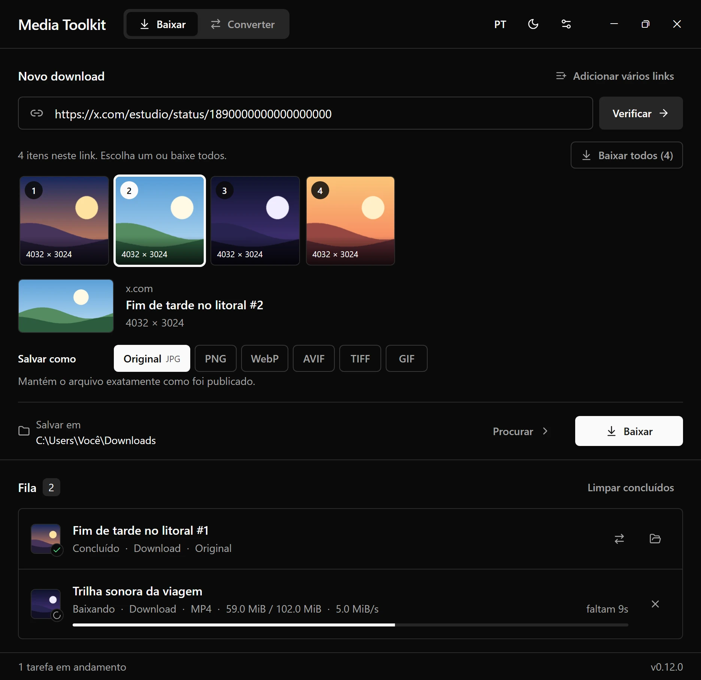
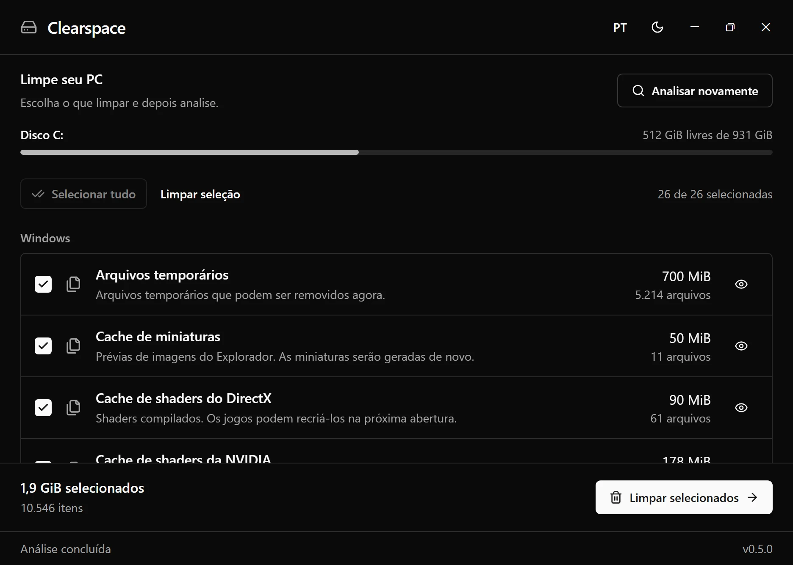

Phantom Menu
Menu para FiveM desenvolvido em Lua, com interface própria, atalhos configuráveis e previews 3D de jogadores e veículos. Também permite salvar configurações, roupas e locais.
Desenvolvo projetos em Lua e Python.
Desenvolvo o Phantom Menu para FiveM e aplicativos para Windows, como o Media Toolkit e o Clearspace. Gosto de trabalhar na interface e nos detalhes que deixam esses projetos mais fáceis de usar.
Menu para FiveM desenvolvido em Lua, com interface própria, atalhos configuráveis e previews 3D de jogadores e veículos. Também permite salvar configurações, roupas e locais.
Aplicativo para Windows com ferramentas de download e conversão de imagens, áudio, vídeo e animações. Tem fila de tarefas salva, cancelamento e retomada de downloads compatíveis. O modo pelo terminal também continua disponível.

$ unidown <video-url> --type audio --convert mp3
Title: My video
Downloading: 100%
Done! File saved to:
downloads/My video [id].mp3Aplicativo para Windows que analisa arquivos temporários, caches e históricos. Você escolhe as categorias, confere a prévia e confirma o que quer limpar, com um resumo no final.
